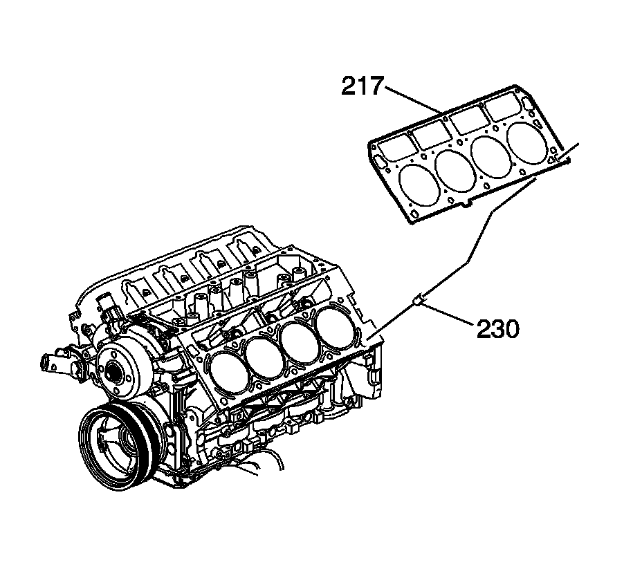
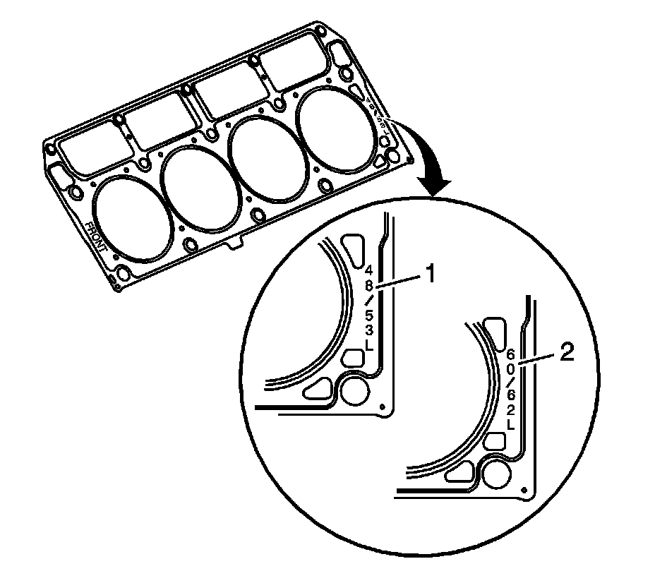
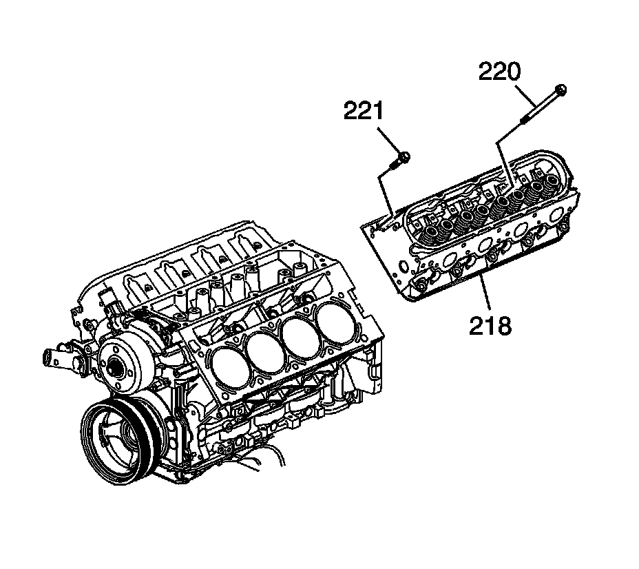

82. Cylinder Head Installation - Left Side
Cylinder Head Installation - Left Side
Tools Required
^ J 42385-100 Head/Main Bolt Thread Repair Kit
^ J 45059 Angle Meter

Caution: Refer to Safety Glasses Caution.
Notice: Clean all dirt, debris, and coolant from the engine block cylinder head bolt holes. Failure to remove all foreign material may result in damaged threads, improperly tightened fasteners or damage to components.
Important:
^ Do not use the cylinder head bolts again. Install NEW cylinder head bolts during assembly.
^ Do not use any type of sealant on the cylinder head gasket, unless specified.
Clean the engine block cylinder head bolt holes, if required.
Thread repair tool J 42385-107 may be used to clean the threads of old threadlocking material.
1. Spray cleaner GM P/N 12346139 (Canadian P/N 10953463), GM P/N 12377981 (Canadian P/N 10953463), or equivalent, into the hole.
2. Clean the cylinder head bolt holes with compressed air.
3. Install the cylinder head locating pins (230).

4. Inspect the locating pins for proper installation.

5. Inspect the displacement markings (1, 2) on the gasket, for proper usage.
6. Install the NEW cylinder head gasket (217) onto the locating pins.

7. Install the cylinder head (218) onto the locating pins and the gasket.
8. Install the NEW cylinder head bolts (220, 221).

Notice: Refer to Fastener Notice.
9. Tighten the cylinder head bolts.
1. Tighten the M11 cylinder head bolts (1-10) a first pass in sequence to 30 N.m (22 lb ft).
2. Tighten the M11 cylinder head bolts (1-10) a second pass in sequence to 90 degrees using the J 45059.
3. Tighten the M11 cylinder head bolts (1-10) a final pass in sequence to 70 degrees using the J 45059.
4. Tighten the M8 cylinder head bolts (11-15) to 30 N.m (22 lb ft). Begin with the center bolt (11) and alternating side-to-side, work outward tightening all of the bolts.